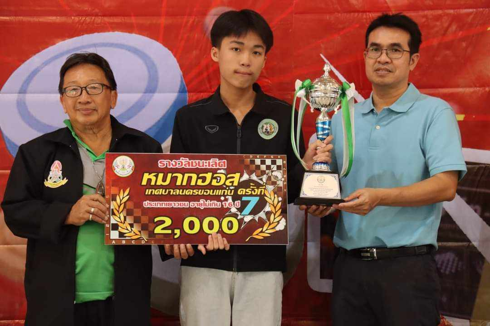
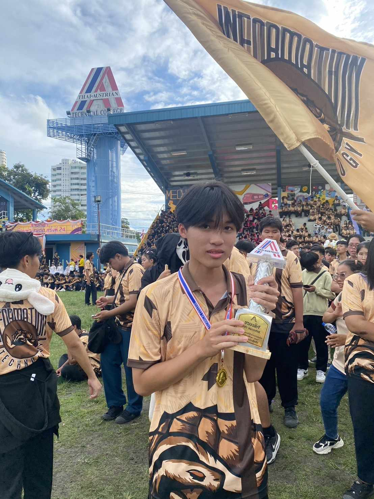

ข้อมูลส่วนตัว
ข้อมูลส่วนตัว
ชื่อ นาย ณัฐวรรธน์ โรจนธนธรรม
ชื่อเล่น: ตูมตาม อายุ: 16
วันเกิด: 26/12/2550
ที่อยู่ ต.หนองปรือ อ.บางละมุง จ.ชลบุรี อยู่ในตัวเมือง พัทยา
ข้อมูลด้านการศึกษา
จบการศึกษามาจาก โรงเรียนพัทธยาอรุโณทัย
GPAX: 3.75
ศึกษาต่อใน วิทยาลัยเทคนิคสัตหีบ สาขา เทคโนโลยีสารสนเทศ
GPA 1/1: 3.85
GPA 1/2: 3.97
งานอดิเรก / สิ่งที่สนใจ
งานอดิเรก: เล่นเกม, นอน
แรงบันดาลใจที่เลือกเรียนคอมพิวเตอร์
แรงบันดาลใจที่เลือกเรียนคอมพิวเตอร์มาจากความสนใจในเทคโนโลยีและการใช้คอมพิวเตอร์มาตั้งแต่เด็ก ซึ่งทำให้รู้สึกว่าคอมพิวเตอร์คือสิ่งที่ตนเองถนัด และมีความฝันอยากสร้างนวัตกรรมเทคโนโลยีอำนวยความสะดวกสบายให้กับลูกของเรา และอยากทำงานในสายที่ตัวเองถนัดและอยู่กับมันมานาน
ผลงาน เกียรติคุณ
ได้เป็นตัวแทนเข้าร่วมการแข่งขันวิทยาศาสตร์-คณิตศาสตร์ และเทคโนโลยี ได้รับรางวัลรองชนะเลิศอันดับที่ 1
รางวัลชนะเลิศลำดับที่ 1 รายการ เทศบาลนครขอนแก่น หมากกระดานคัพขอนแก่น
รางวัลชนะเลิศลำดับที่ 1 หมากกระดานของวิทยาลัยเทคนิคสัตหีบ